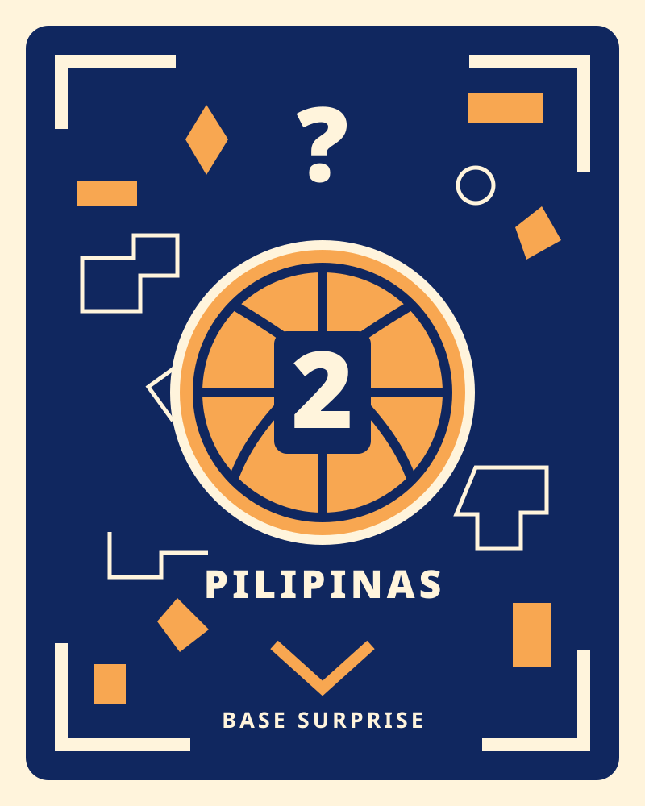

Print at 100% / actual size, with fit-to-page disabled. The entire badge must measure 80 × 100 mm. Mount it flat on rigid matte card on the basket base. Do not bend it around wicker.
Lay the badge flat, open Pumpky, and tap Start camera. Look down at the badge from a slight angle to reveal the surprise standing on it. The soundtrack is included; Safari may require one tap on Play sound. Hide the badge to pause the audio.
This is an image-tracking icon, not a QR code. The normal front badge still activates Halloween basket designs.
